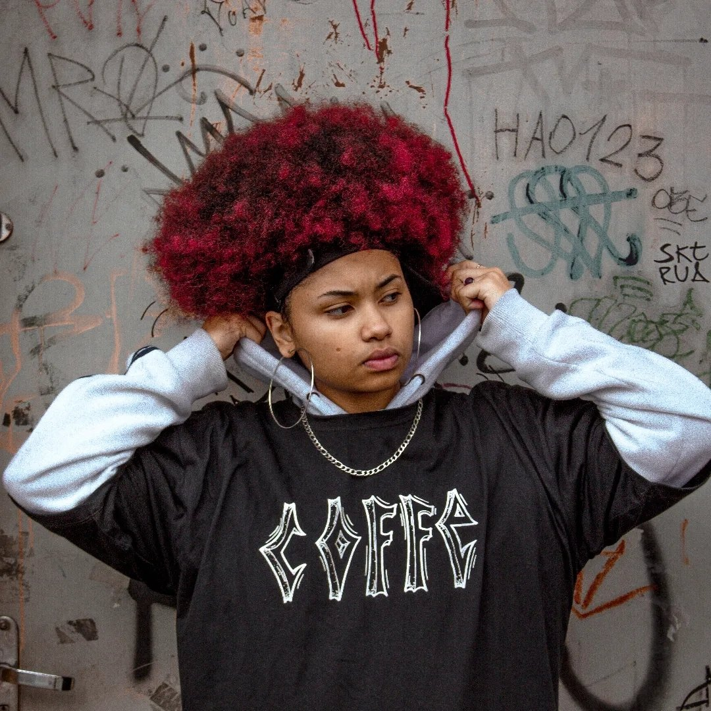

Vick Vi é uma artista independente, guarulhense, mc de batalha, poeta slammer, fotógrafa e atriz. Participa ativamente em batalhas de rima e slams principalmente nas cidades de São Paulo e Guarulhos, além de ter a própria produtora de músicas, a Prod. Coffe. É organizadora do Slam do Prego. Participou e se classificou no Slam SP 22 e participou do Slam BR 22.